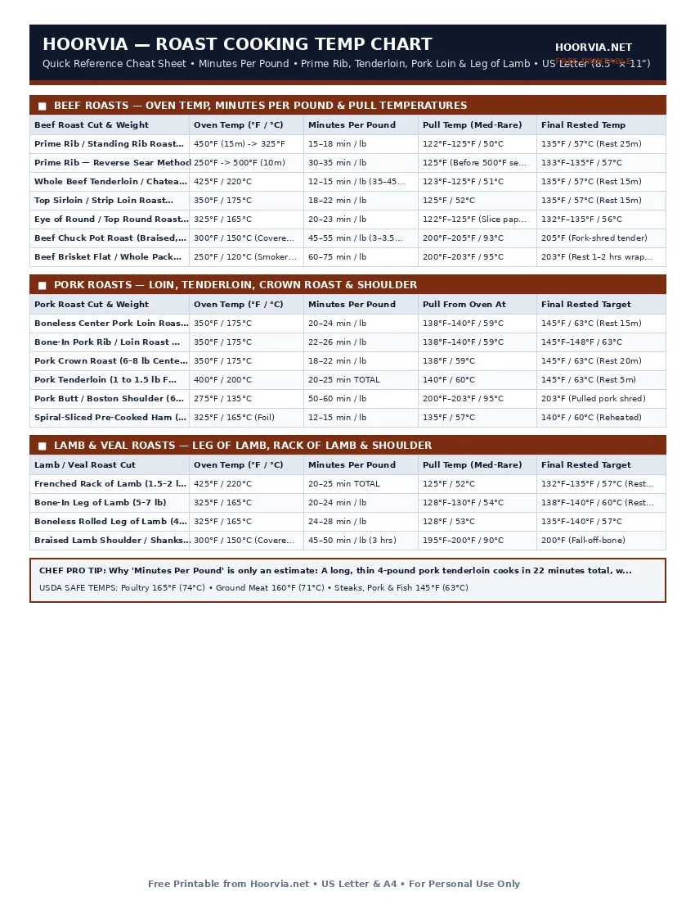

Roast Cooking Time & Temperature Chart (Beef, Pork & Lamb)
Large centerpiece roasts are expensive investments where a 10°F miscalculation ruins dinner. Unlike thin steaks that only rise 5°F after cooking, a 5-to-8-pound roast stores enough thermal energy in its outer crust to raise the internal core temperature by 10°F to 15°F while resting! Always pull large roasts 10°F below your final serving target.
| Beef Roast Cut & Weight | Oven Temp (°F / °C) | Minutes Per Pound | Pull Temp (Med-Rare) | Final Rested Temp |
|---|---|---|---|---|
| Prime Rib / Standing Rib Roast (4–8 lb) | 450°F (15m) -> 325°F | 15–18 min / lb | 122°F–125°F / 50°C | 135°F / 57°C (Rest 25m) |
| Prime Rib — Reverse Sear Method | 250°F -> 500°F (10m) | 30–35 min / lb | 125°F (Before 500°F sear) | 133°F–135°F / 57°C |
| Whole Beef Tenderloin / Chateaubriand (3–4 lb) | 425°F / 220°C | 12–15 min / lb (35–45m total) | 123°F–125°F / 51°C | 135°F / 57°C (Rest 15m) |
| Top Sirloin / Strip Loin Roast (3–5 lb) | 350°F / 175°C | 18–22 min / lb | 125°F / 52°C | 135°F / 57°C (Rest 15m) |
| Eye of Round / Top Round Roast (3–4 lb) | 325°F / 165°C | 20–23 min / lb | 122°F–125°F (Slice paper-thin!) | 132°F–135°F / 56°C |
| Beef Chuck Pot Roast (Braised, 3–4 lb) | 300°F / 150°C (Covered) | 45–55 min / lb (3–3.5 hrs) | 200°F–205°F / 93°C | 205°F (Fork-shred tender) |
| Beef Brisket Flat / Whole Packer (8–12 lb) | 250°F / 120°C (Smoker/Oven) | 60–75 min / lb | 200°F–203°F / 95°C | 203°F (Rest 1–2 hrs wrapped) |
| Pork Roast Cut & Weight | Oven Temp (°F / °C) | Minutes Per Pound | Pull From Oven At | Final Rested Target |
|---|---|---|---|---|
| Boneless Center Pork Loin Roast (3–4 lb) | 350°F / 175°C | 20–24 min / lb | 138°F–140°F / 59°C | 145°F / 63°C (Rest 15m) |
| Bone-In Pork Rib / Loin Roast (4–6 lb) | 350°F / 175°C | 22–26 min / lb | 138°F–140°F / 59°C | 145°F–148°F / 63°C |
| Pork Crown Roast (6–8 lb Centerpiece) | 350°F / 175°C | 18–22 min / lb | 138°F / 59°C | 145°F / 63°C (Rest 20m) |
| Pork Tenderloin (1 to 1.5 lb Fillet) | 400°F / 200°C | 20–25 min TOTAL | 140°F / 60°C | 145°F / 63°C (Rest 5m) |
| Pork Butt / Boston Shoulder (6–8 lb) | 275°F / 135°C | 50–60 min / lb | 200°F–203°F / 95°C | 203°F (Pulled pork shred) |
| Spiral-Sliced Pre-Cooked Ham (7–9 lb) | 325°F / 165°C (Foil) | 12–15 min / lb | 135°F / 57°C | 140°F / 60°C (Reheated) |
| Lamb / Veal Roast Cut | Oven Temp (°F / °C) | Minutes Per Pound | Pull Temp (Med-Rare) | Final Rested Target |
|---|---|---|---|---|
| Frenched Rack of Lamb (1.5–2 lb) | 425°F / 220°C | 20–25 min TOTAL | 125°F / 52°C | 132°F–135°F / 57°C (Rest 10m) |
| Bone-In Leg of Lamb (5–7 lb) | 325°F / 165°C | 20–24 min / lb | 128°F–130°F / 54°C | 138°F–140°F / 60°C (Rest 20m) |
| Boneless Rolled Leg of Lamb (4–5 lb) | 325°F / 165°C | 24–28 min / lb | 128°F / 53°C | 135°F–140°F / 57°C |
| Braised Lamb Shoulder / Shanks (4 lb) | 300°F / 150°C (Covered) | 45–50 min / lb (3 hrs) | 195°F–200°F / 90°C | 200°F (Fall-off-bone) |
Printable Cheat Sheet Preview (US Letter & A4)
High-contrast, ink-saving layout designed for kitchen binders, grill stations, and refrigerator doors. No sign-up required.

High-Heat Sear vs. Reverse Sear for Holiday Centerpiece Roasts
Traditional cookbooks start prime rib or leg of lamb at 450°F for 15 minutes and then drop the oven to 325°F. While effective, that method creates a thick ring of grey, well-done meat around a small pink bullseye in the center. Modern steakhouse kitchens use the Reverse Sear method for any roast over 3 pounds:
How to Reverse-Sear Prime Rib, Beef Tenderloin & Pork Loin
- Slow-Roast at 225°F–250°F First: Place the seasoned roast on a wire rack set inside a rimmed baking sheet and bake at 250°F until the internal core reaches 10°F–12°F below your final serving temp (e.g., 122°F for medium-rare beef, or 135°F for pork loin). Because the oven heat is gentle, the meat cooks to an edge-to-edge rosy pink with almost zero carryover spike.
- Rest 20 Minutes While Cranking Oven to 500°F: Remove the roast and tent loosely with foil while your oven heats to 500°F (or heat a cast-iron skillet).
- Blast for 8–10 Minutes for a Crackling Crust: Return the rested roast to the 500°F oven for just 8 to 10 minutes until the exterior fat cap blisters golden brown. Carve immediately—no second rest required!
Frequently Asked Questions
Should I roast meat fat-side up or fat-side down?
Always roast fat-side (fat cap) UP! Placing the fat cap on top shields the lean muscle underneath from direct top-element radiation and allows melting fat to baste around the sides of the roast.
Why did my beef eye of round roast turn out tough even at 135°F?
Eye of round comes from the heavily exercised rear leg muscle and has almost zero marbling. To make it tender, pull it at 122°F (so it rests to 132°F medium-rare) and slice it paper-thin (1/16 inch) strictly against the grain.
Do I cover a roast with foil while it is baking in the oven?
Leave tender dry-heat roasts (prime rib, tenderloin, pork loin, rack of lamb) UNCOVERED so the exterior browns via the Maillard reaction. Only cover tough braising cuts (chuck pot roast, brisket, pork shoulder) to trap steam and melt collagen.
Complete Meat & Seafood Reference Cluster (10 Free Sheets)
- 🥩 Master Meat Internal Temperature Chart (#021)
- 🥩 Steak Doneness Chart: Pull vs Target Temps (#022)
- 🥩 Chicken Temperature Chart: White vs Dark Meat (#023)
- 🥩 Turkey Temperature & Roasting Time Guide (#024)
- 🥩 Pork Internal Temperature Chart: Chops vs BBQ (#025)
- 🥩 Ground Meat Internal Temperature Chart (#026)
- 🥩 Fish & Shellfish Internal Temperature Chart (#027)
- 🥩 Seafood Cooking Times: Bake, Sear, Grill & Steam (#028)
- 🥩 Meat Resting Time & Carryover Temp Guide (#030)